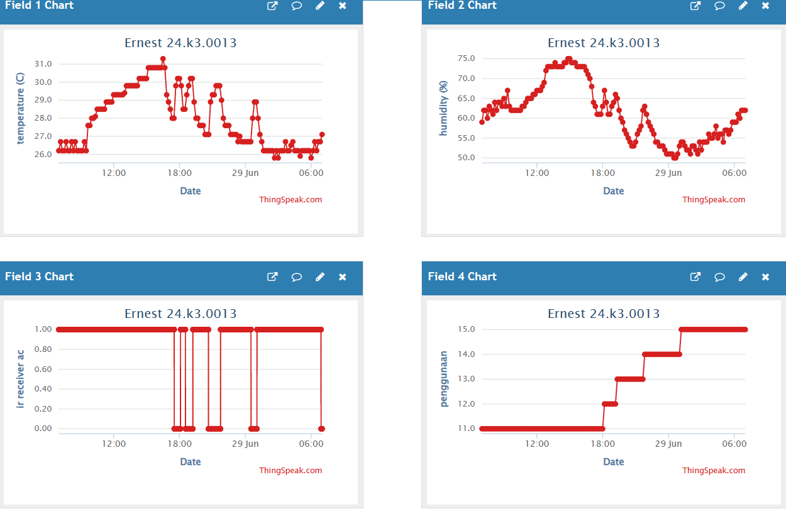
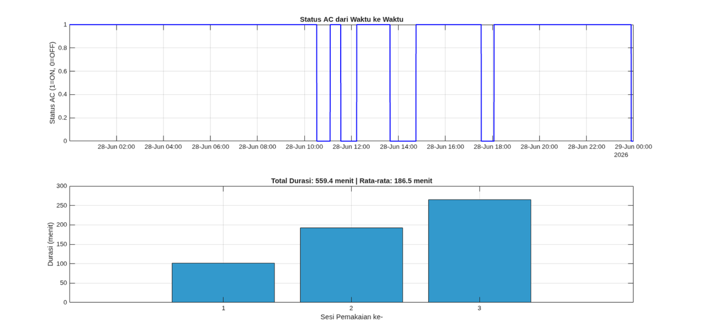

- 2026
- Arduino IDE
- C++
- IR Receiver
- DHT11
- ThingSpeak
Sistem IoT yang mendeteksi kapan AC dinyalakan dan dimatikan lewat sinyal IR dari remote, menghitung berapa kali AC dipakai, serta mencatat suhu dan kelembaban ruangan. Datanya dikirim ke ThingSpeak lewat Wi-Fi untuk dipantau dan dianalisis.
Cara kerja
- IR receiver membaca sinyal dari remote AC. Sketch mengenali dua kode, tombol ON dan tombol OFF; kode lain dicatat sebagai "bukan AC" dan diabaikan.
- Status AC disimpan sebagai ON atau OFF. Penghitung penggunaan hanya bertambah saat AC berpindah dari OFF ke ON, jadi menekan ON berulang kali tidak dihitung ganda.
- DHT11 membaca suhu dan kelembaban ruangan.
- LED pada board menyala 300 ms setiap kali sinyal IR terbaca, sebagai tanda bahwa remote tertangkap.
Data yang dikirim ke ThingSpeak
Empat field dikirim setiap 15 detik, sesuai batas minimum pembaruan ThingSpeak:
| Field | Isi |
|---|---|
| 1 | Suhu (°C) |
| 2 | Kelembaban (%) |
| 3 | Status AC (1 = ON, 0 = OFF) |
| 4 | Jumlah penggunaan AC |
Hasil pemantauan
- Dashboard ThingSpeak: grafik suhu sekitar 26–31 °C dan kelembaban sekitar 50–75% sepanjang pemantauan; status AC berganti antara 1 dan 0 setiap kali AC dinyalakan atau dimatikan, dan penghitung penggunaan naik dari 11 ke 15.
- Analisis sesi pemakaian: grafik status AC terhadap waktu diubah menjadi durasi tiap sesi. Pada data contoh terdapat 3 sesi dengan total 559,4 menit dan rata-rata 186,5 menit per sesi.

Dashboard ThingSpeak: suhu, kelembaban, status AC, dan jumlah penggunaan (klik untuk memperbesar).

Analisis status AC dan durasi tiap sesi pemakaian (klik untuk memperbesar).
Komponen dan pustaka
- Perangkat: mikrokontroler ber-Wi-Fi, IR receiver (pin 15), sensor DHT11 (pin 4), dan LED bawaan board (pin 2).
- Pustaka Arduino: ThingSpeak, DHT sensor library, dan IRremoteESP8266.
- Program ditulis dalam C++ di Arduino IDE; log lengkap tersedia lewat Serial Monitor (115200 baud).
Menjalankan
- Buka sketch di Arduino IDE dan pasang ketiga pustaka di atas.
- Isi nama Wi-Fi, password, nomor channel, dan Write API Key ThingSpeak milik sendiri.
- Kode tombol ON dan OFF dibuat untuk satu remote tertentu. Untuk remote lain, buka Serial Monitor, tekan tombol ON dan OFF, lalu salin nilai "Kode IR" yang muncul ke IR_CODE_ON dan IR_CODE_OFF.